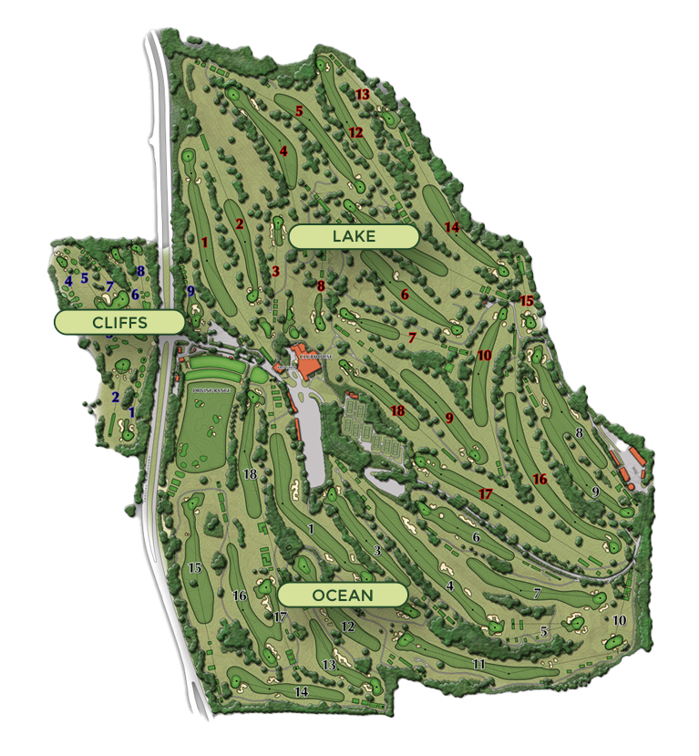

PEACOCK GAP GOLF CLUB
Rated "Best of the County" by Marin Magazine and located in San Rafael, 25 miles north of San Francisco in the heart of Marin County, Peacock Gap Golf Club has been a pillar of the golf community for decades. The championship level course cultivates a true love for the game with year-round golf tournaments and a full calendar of events that unfold in an unparalleled setting. Enjoy gorgeous views of Marin County while playing on one of Northern California’s best heritage courses.
Close to the city while firmly rooted in the tranquility of the country, Peacock Gap blends a commitment to tradition with state-of-the-art practice facilities, cutting-edge instruction, and a modern take on this fun and challenging game. Take your game to the next level at Peacock Gap Golf Club.
Select a Course to Begin
